Independent Scan, Inspect and Convert commands in one workspace. File selection only in the table. One conversion approval action. Temporary storage in Settings. These are alternative screen states, not a required sequence.
Earlier concepts · Prompts and design notes
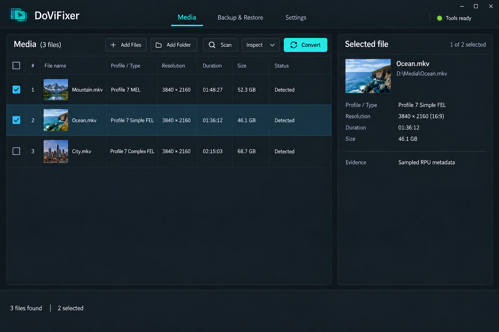
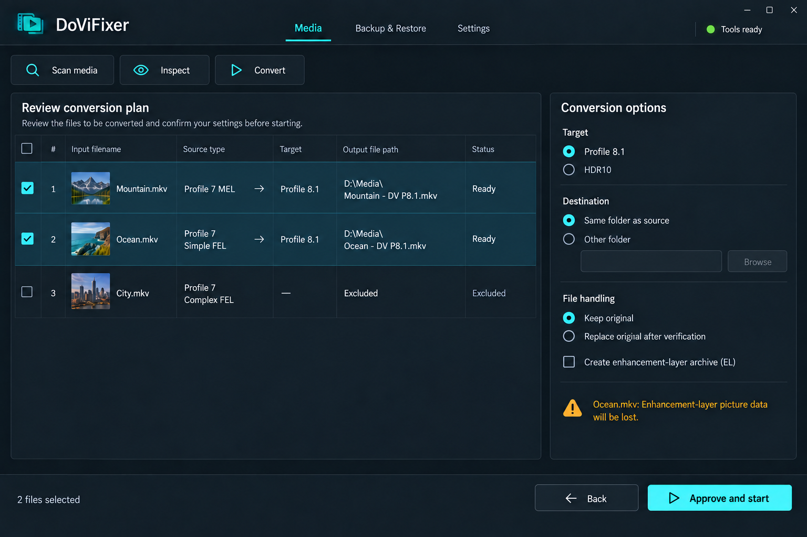
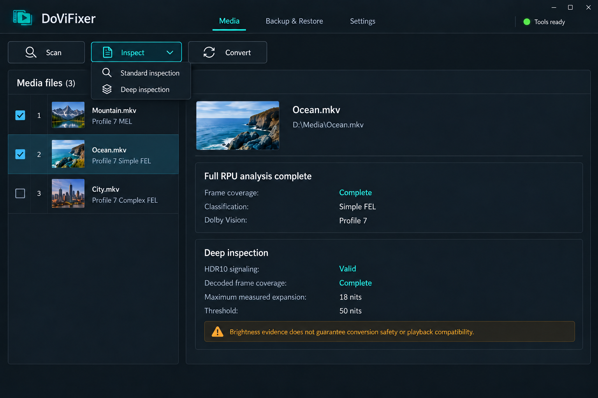
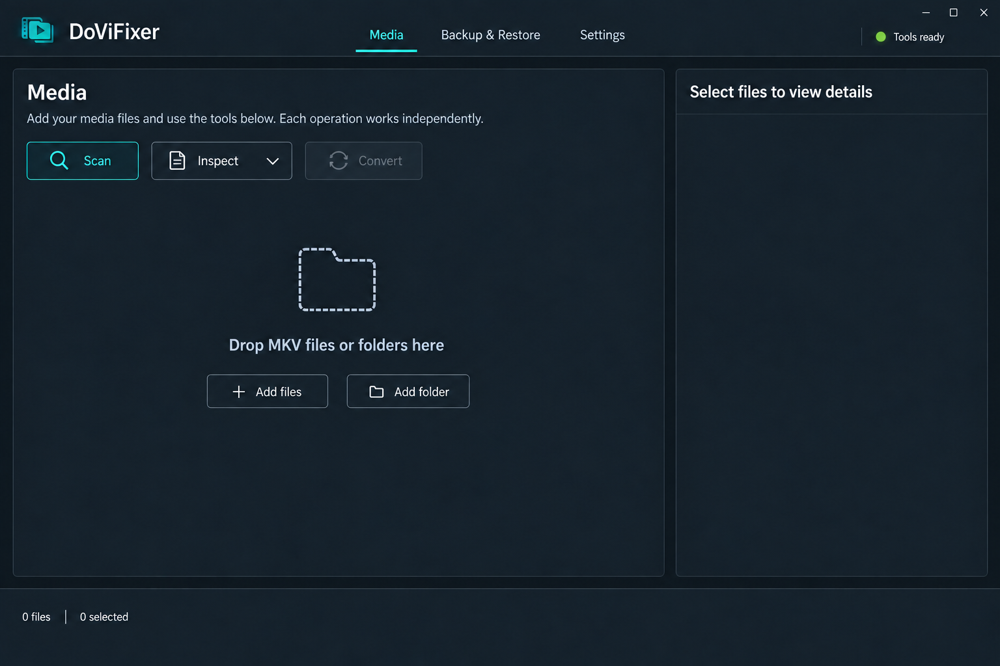
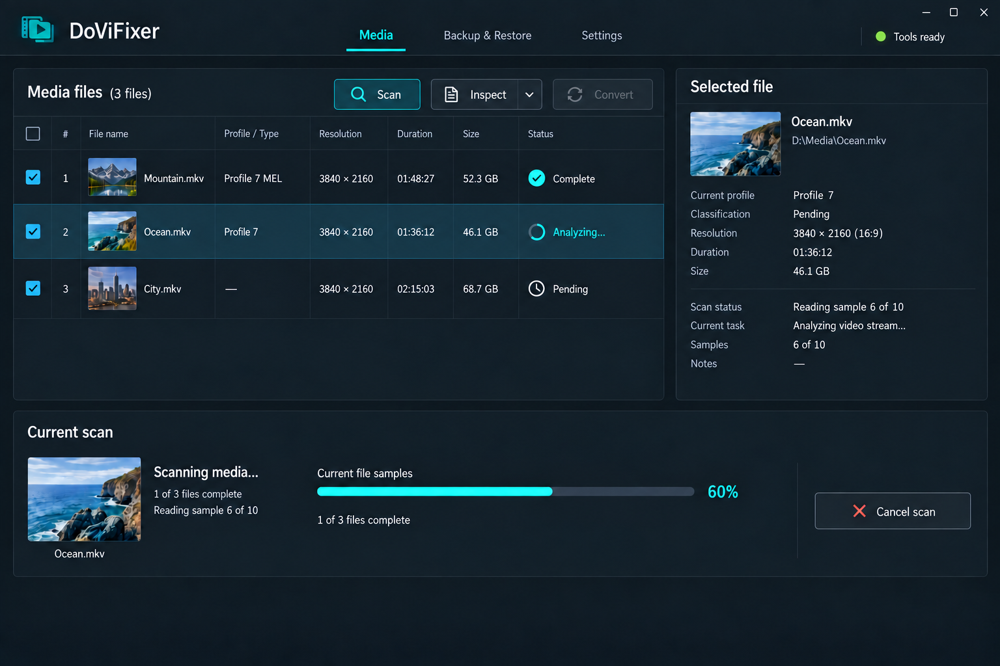
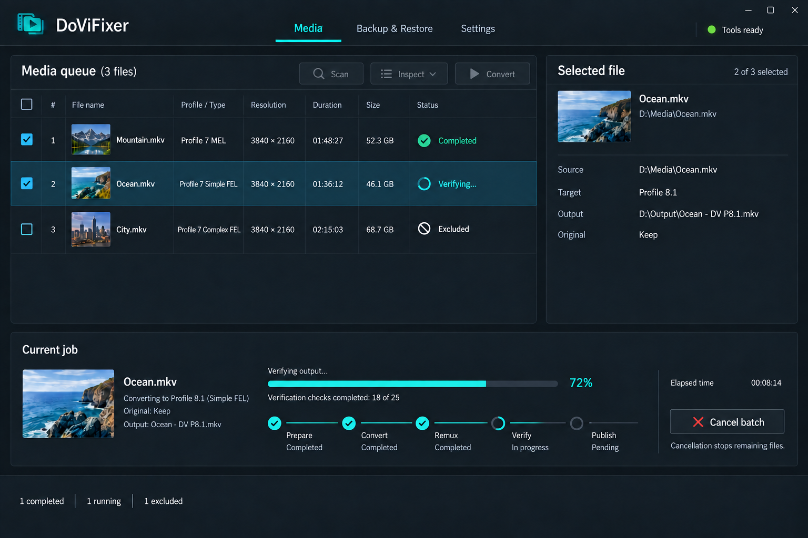
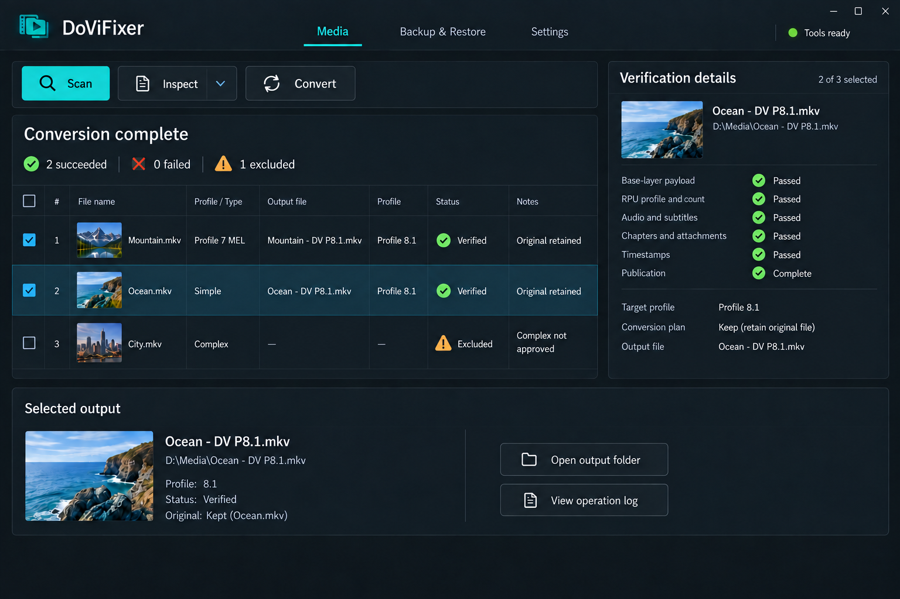
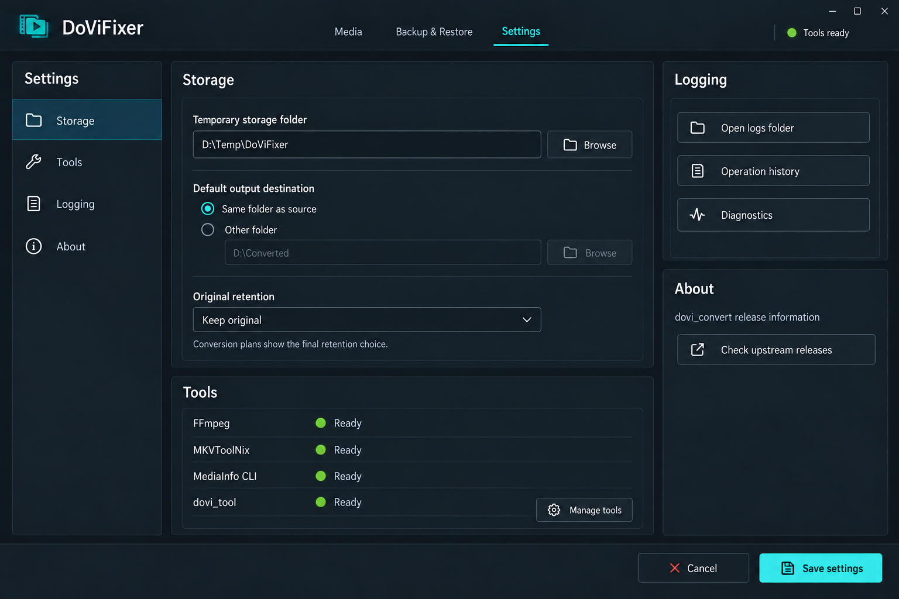
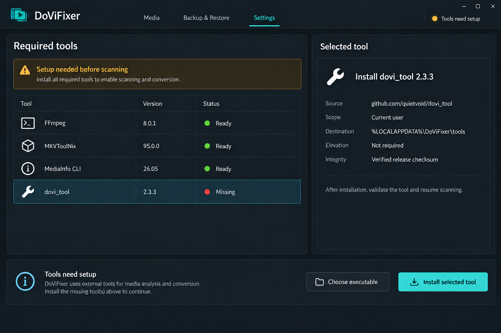
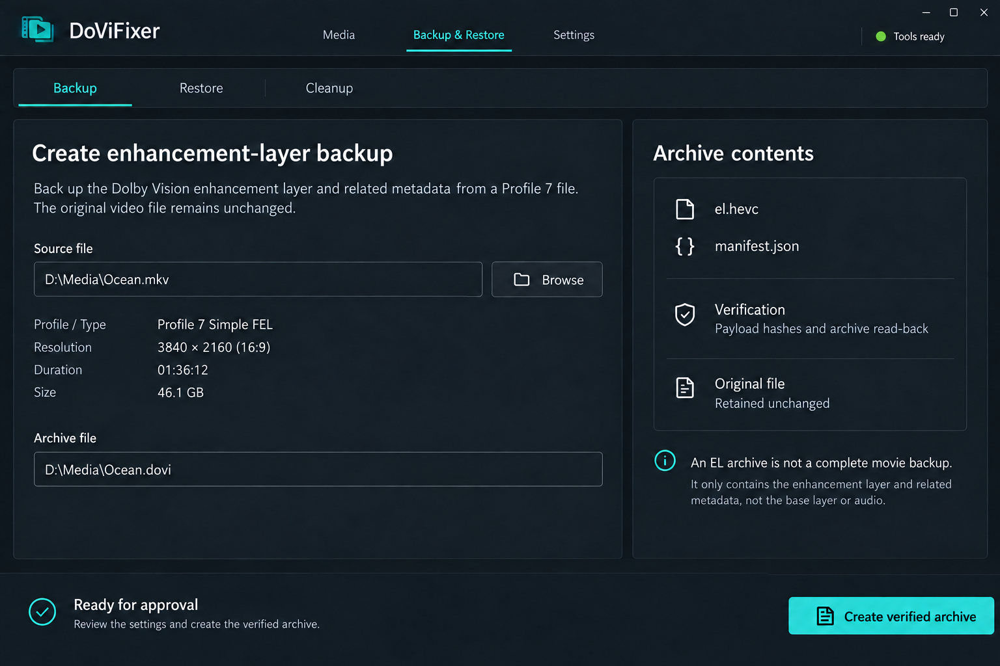
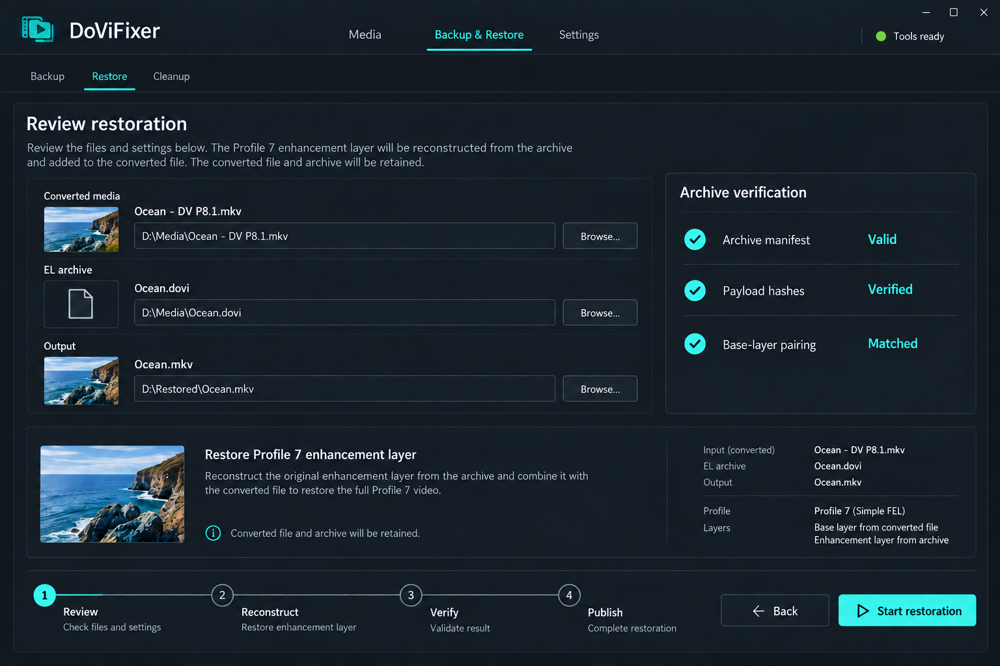
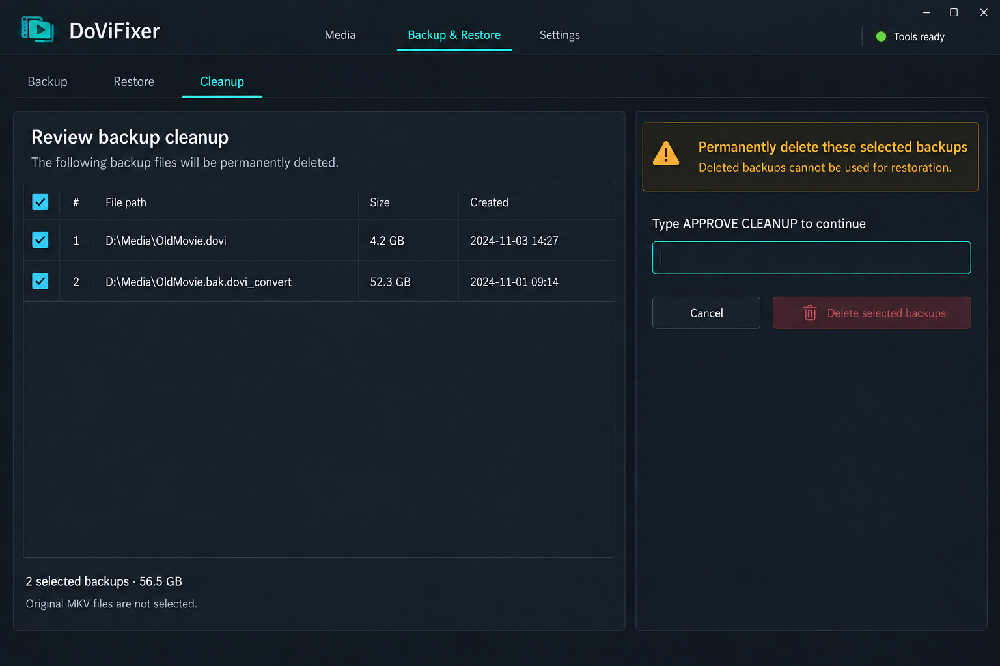